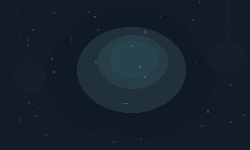
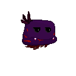
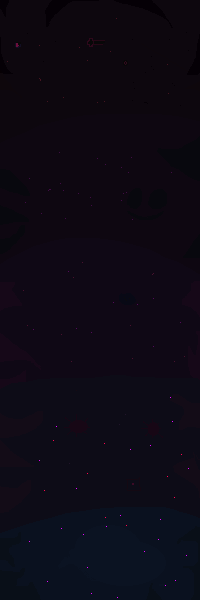
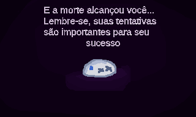
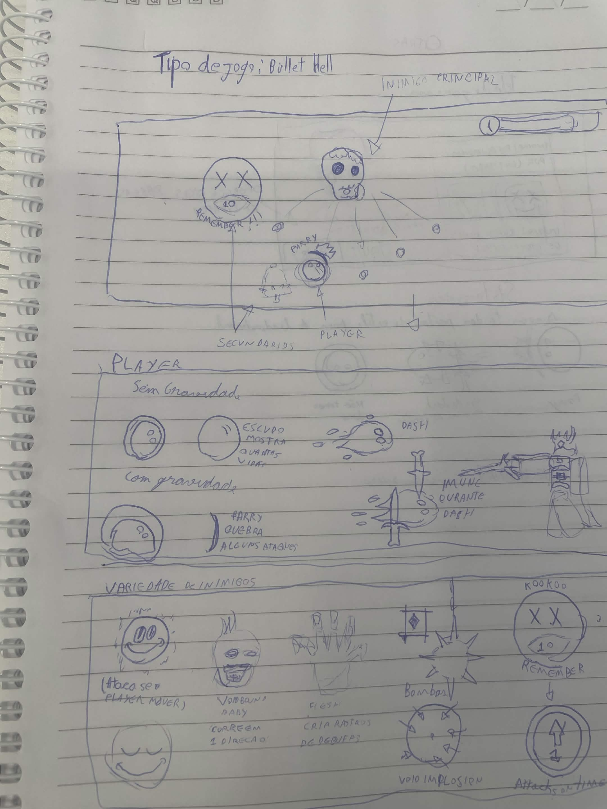
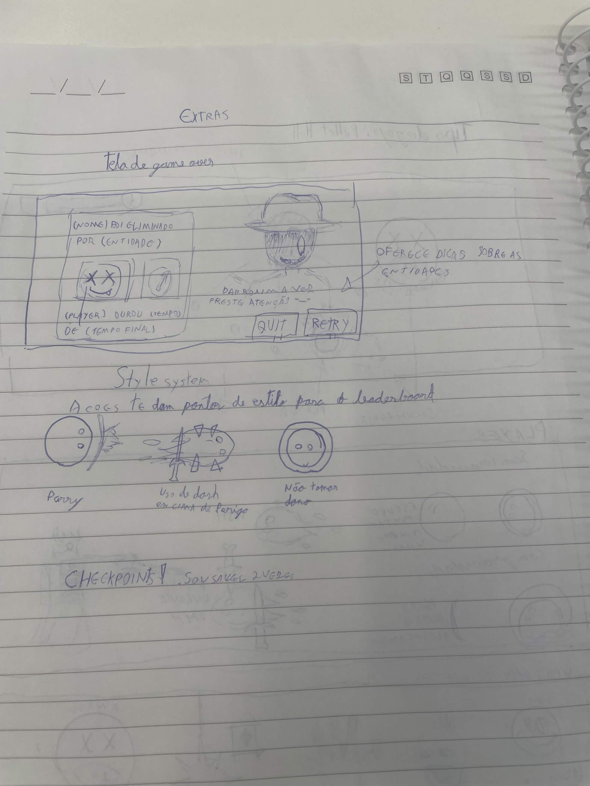

Dash
Movimento curto para escapar de ataques e atravessar espaços perigosos.
Python + Pygame / Bullet hell
Sobreviva a uma arena escura, leia padrões de ataque e use dash, parry e controle de distância para ficar vivo contra inimigos cada vez mais agressivos.


Descrição do jogo
Kabuto é um jogo de bullet hell em que o jogador controla uma pequena bolha blindada em uma arena tomada por inimigos. O foco da experiência está em reagir rápido, reconhecer padrões e escolher o momento certo para se mover, desviar ou usar o parry.
A direção visual usa pixel art, alto contraste e cores neon sobre fundos escuros para destacar personagem, ameaças e feedbacks importantes durante a partida.
Movimento curto para escapar de ataques e atravessar espaços perigosos.
Ação de tempo preciso para transformar defesa em oportunidade.
Camadas de vida comunicam dano e deixam o erro visível imediatamente.
Telas do projeto



Apresentação curta
Download e execução
O pacote abaixo aponta para o repositório do jogo. Depois de baixar, extraia o ZIP, instale o Pygame e execute o arquivo principal do projeto em Python.
Log de desenvolvimento
Criação do repositório, ambiente do Pygame, primeiras entidades de inimigos e tela de menu com a identidade visual LIMIAR/Kabuto.
Organização das pastas do projeto, atualização do README, correção do link do repositório e preparação da base para novas mecânicas.
Implementação da classe do jogador, movimentação livre pela tela, mira fixa no cursor, mecânica de bala, correções de colisão e base de gameplay.
Entrada do dash, lógica de escudos, tiros no jogador, ajustes de merge, jogo em tela cheia e melhor organização das variáveis principais.
Criação do inimigo Ghost, movimentação própria, sistema de tiros dos oponentes, cooldowns corrigidos e primeiros testes da estrutura de ondas.
Merge da branch de ondas, novos inimigos, animações, tela de game over, correção de bugs e ajustes depois dos conflitos de integração.
Troca dos backgrounds dos cenários, integração do míssil/ICBM, ajustes de glitches e revisão dos pontos de spawn dos inimigos.
Tela passando a se mover para cima, inimigos entrando pelos lados e pelo topo, remodelagem das ondas, lógica de batalhas, sons e sistema de progresso.
Entrada dos inimigos finais citados no histórico, como Dozer e Flesh, além dos últimos ajustes de comportamento antes da publicação da página.
Membros do grupo
Programação, integração e página do jogo.
Programação, assets e balanceamento do gameplay.
Esboço em papel


Relato CRAP
A página usa fundo escuro e cores fortes nos botões, títulos e sprites para separar ações principais, textos e elementos de gameplay.
Bordas, sombras retas, labels e cards seguem o mesmo padrao visual para reforcar a identidade pixel art do jogo.
As seções usam colunas, grades e conteúdos centralizados para manter leitura consistente em desktop e celular.
Informações relacionadas ficam agrupadas: download com instruções, telas com legendas, equipe em cards e mecânicas junto da descrição.